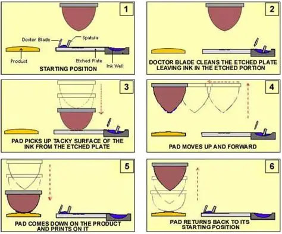
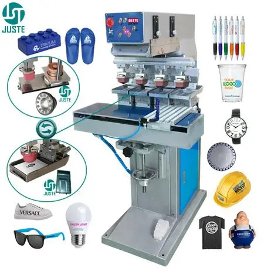
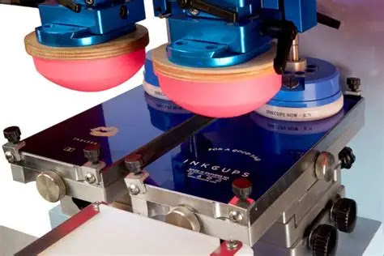

O que é a tampografia?
A tampografia é uma técnica de impressão indireta: um tampão flexível de silicone recolhe a tinta do desenho gravado numa placa, chamada cliché, e transfere-a para o objeto. A flexibilidade permite alcançar certas superfícies curvas ou irregulares. ↗
Como funciona
O ciclo abaixo descreve um sistema de copo fechado. Numa impressão com várias cores, cada cor exige aplicação e alinhamento próprios; uma cor fora da posição pode alterar a leitura do logótipo. ↗
-
Preparar a arte e o cliché
O desenho é preparado e gravado na placa.
-
Distribuir a tinta
A tinta preenche a gravação; o anel do copo retira o excesso da superfície.
-
Recolher a imagem
O tampão de silicone pressiona a placa e recolhe a tinta do desenho.
-
Transferir para o artigo
O tampão desloca-se até à peça, pressiona-a e deposita a imagem.
-
Secar ou curar
A tinta seca ou recebe a cura adequada ao sistema utilizado.
Descrição do ciclo de copo fechado: ↗. Secagem e cura dependem da tinta e dos auxiliares utilizados: ↗.

Equipamentos
O conjunto inclui a máquina, o cliché, o sistema de tinta, o tampão e um suporte que mantém o artigo na posição de impressão. A configuração precisa de ser escolhida para a forma da peça e para a área acessível.

Consultar também a fotografia de equipamento anteriormente documentada e os seus créditos.
Materiais e produtos
É uma possibilidade para logótipos definidos, pormenores pequenos e áreas que não sejam totalmente planas. Canetas, porta-chaves e alguns dispositivos USB são exemplos a avaliar no modelo concreto. Não basta reconhecer a categoria do produto: uma curva apertada, um relevo ou um revestimento podem alterar a escolha. ↗
Cores e acabamentos
Podem preparar-se cores com referência Pantone. A aparência deve ser validada no artigo, sobretudo sobre um fundo escuro: a referência de cor não substitui uma prova do resultado. ↗ Peça confirmação do contraste e da cobertura pretendidos antes da aprovação.
Preparação da arte
Envie o logótipo original, de preferência vetorial, a posição pretendida, as dimensões e as referências de cor. Confira a grafia e observe o desenho à escala final. Peça à produção que avalie letras pequenas, linhas finas e espaços vazios antes de simplificar a arte. A simulação serve para discutir a composição; a amostra física permite avaliar o aspeto no suporte.
Condições a confirmar
A compatibilidade depende do material, da tinta e do acabamento, podendo exigir tratamento prévio. A limpeza e a preparação do suporte influenciam a aderência; os auxiliares têm de ser escolhidos para o sistema de tinta. ↗ Identifique o plástico, metal ou revestimento e a utilização prevista. Confirme como será validada a resistência necessária, sem presumir resistência à lavagem ou ao desgaste.
Limitações
É habitualmente mais indicada para áreas relativamente pequenas. Muitas cores tornam a preparação e o alinhamento mais exigentes. Fotografias e degradés requerem avaliação específica e podem beneficiar de outra técnica; não são aqui tratados como uma impossibilidade universal. O número de cores, a dimensão e o detalhe viáveis dependem do artigo e do equipamento. ↗
Comparar alternativas
Para uma imagem com muitas cores, compare a impressão UV num suporte compatível. Para uma marca sem tinta, avalie a gravação a laser; a serigrafia é outra hipótese a discutir conforme a área e o artigo.
Componentes: o papel do tampão
O cliché guarda o desenho; o copo contém tinta e o seu anel retira o excesso da placa. O tampão recolhe e deposita a imagem. Existem tampões de silicone com diferentes formas e durezas, escolhidos conforme a aplicação. ↗ Na fotografia, observam-se tampões montados sobre as placas; o suporte do artigo completa o posicionamento.

Uma ligação à relojoaria
O manual ICN-2200-PS da Inkcups associa a utilização inicial da tampografia à decoração de mostradores na relojoaria suíça. Esta referência sustenta a ligação histórica, sem estabelecer aqui uma data de invenção nem afirmar uma origem no século XVIII. ↗
Problemas frequentes e verificações
Um sinal pode ter várias causas. Estas verificações orientam a conversa com a produção.
Fontes e âmbito
As fontes descrevem processos, equipamentos ou contextos específicos. As explicações gerais e recomendações de validação não são especificações universais.